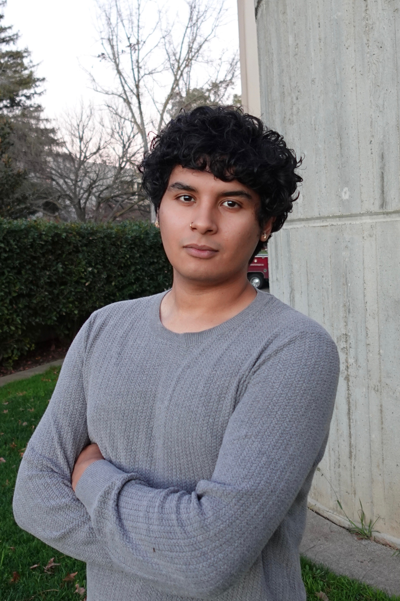

Perspective
Design philosophy & journey

Designing for People, Not Just Pixels
A senior at San Jose State University studying graphic design with a focus on UI/UX, bridging architecture, music production, and technology to create human-centered experiences.
"The question isn't whether technology will transform how we work, it's whether we're asking the right questions as we build it. Design thinking, not just technical prowess, shapes the future of how we interact with the world around us."
Design Philosophy
My approach is grounded in the belief that design is fundamentally about serving people— solving real problems, amplifying human capability, and creating experiences that matter.
Design Serves Human Needs
Whether creating a physical space or a digital interface, good design prioritizes how people interact, feel, and accomplish their goals. Aesthetics matter, but only in service of human experience.
Interdisciplinary Thinking Drives Innovation
The best solutions emerge at the intersection of different fields: architecture's spatial thinking, music's compositional flow, engineering's systematic rigor. Meaningful innovation requires diverse perspectives working together from the beginning.
Question Assumptions, Challenge Constraints
Every project is an opportunity to ask: What if we approached this differently? What are we assuming that might not be true? Creative problem-solving happens when we challenge what we think is possible or necessary.
Technology Should Amplify, Not Replace
Tools and systems should empower people to do their best work, not substitute human judgment and creativity. This means designing with empathy for cognitive load, accessibility, and real-world context.
The Journey
An unconventional path through architecture, music production, community building, and technology—each experience shaping a more holistic approach to design.
2019 - 2022
From Buildings to Experiences
My journey began in architecture at Cal Poly Pomona, where I earned an Associate of Science in Architecture and Landscape. That spatial thinking foundation, understanding how humans interact with physical environments, now informs my approach to digital experiences. Architecture taught me that good design isn't about aesthetics. It's about creating environments that serve human needs. That principle applies whether you're designing a building or crafting a user interface.
2020 - 2023
Design Through Creative Constraints
As a music producer for artists signed to Sumerian Records, I directed musical talent across 40+ projects and 600+ individual tracks, accumulating over 16 million streams. Music production is problem-solving under creative constraints: balancing artistic vision with technical limitations, managing client relationships, iterating based on feedback. Those are the same skills that matter in UX design, brand development, and visual communication.
2024 - Present
Bridging Disciplines
Transferring to San Jose State to study graphic design with a focus on UI/UX, I founded Friends of Figma, a 200-member student organization that deliberately brings together product designers and web developers. Design students think developers only care about code. Developers think designers only care about making things pretty. But the best solutions happen when we work together from the beginning. The club orchestrates technical workshops, design sprints, and collaborative projects that simulate real industry workflows.
2025
Human-Centered Technology
My internship at Tesla's Project Optimus tested this philosophy at scale. Working alongside design, engineering, and QA teams, I helped streamline prototype testing, cutting test cycle times from 10 minutes to 3 minutes. The experience revealed something critical: most development optimizes for technical performance while neglecting human factors. Nobody was systematically asking: How do people actually want to interact with this? When does automation help versus overwhelm? Similarly, as a Google Brand Ambassador, I demonstrated complex features to everyday users, converting qualitative feedback into actionable data, highlighting the gap between technical capability and human understanding.
Current & Future
Design That Serves People
At CasaLikha Architects, I'm partnering with the founder to establish the startup's visual identity, designing the logo, branding guidelines, and custom-coding the company website. This work embodies my belief that design should bridge vision with execution, aesthetics with function. Set to graduate from SJSU in May 2026, I plan to pursue graduate studies in human factors and ergonomics, conducting research that actively shapes how systems are built. Great innovation happens when we reframe impossible questions, when we challenge what we assume technology can or should do.
Looking Forward
The future of design is being shaped right now, whether we ask the right questions depends on having diverse voices in the room. People who understand that technology should serve human values, not the other way around.
Great innovation happens when we reframe impossible questions. When we challenge what we assume design can or should do. That requires perspectives from everywhere, not just engineering, not just design, but both working together.
"The interdisciplinary approach isn't optional, it's essential."